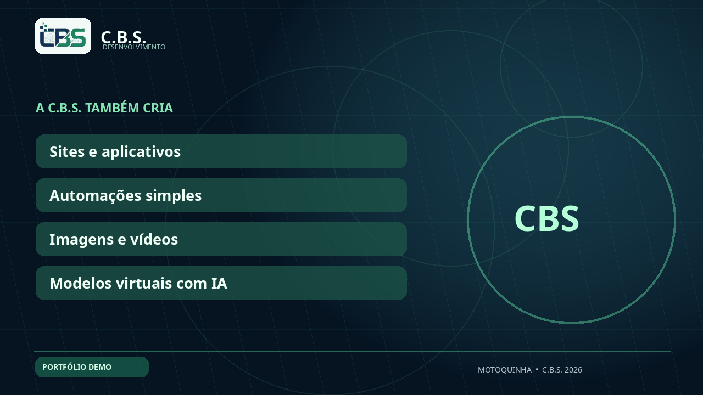

Modelo virtual
Publicidade
Publicidade
Apresentadores digitais
Personagens fictícios e consistentes para apresentação de marcas, aplicativos e roteiros comerciais.
Criamos conceitos de modelos virtuais sintéticos para publicidade, conteúdos audiovisuais e demonstração de produtos, com revisão humana e transparência sobre o uso de inteligência artificial.
Personagens fictícios e consistentes para apresentação de marcas, aplicativos e roteiros comerciais.
Composição de fotos e peças ilustrativas com revisão de identidade, licenças e resultados.

Conteúdo visual com tipografia, transições e animações geradas por código e ferramentas digitais.
Ver demonstração ↗Autorização de uso de marca e imagem, política da plataforma de publicidade, formatos, quantidade de revisões e limites das ferramentas de IA.
Solicitar proposta ↗